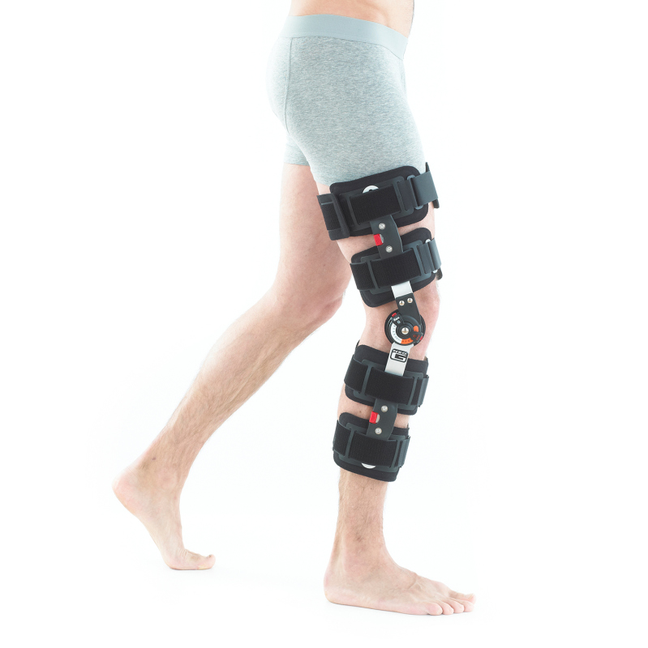
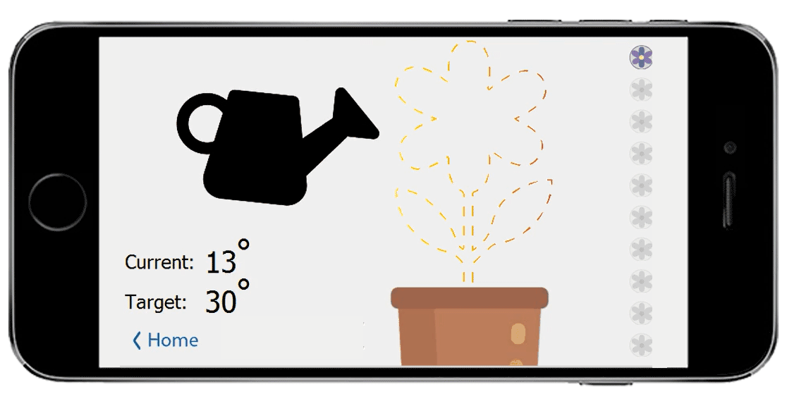
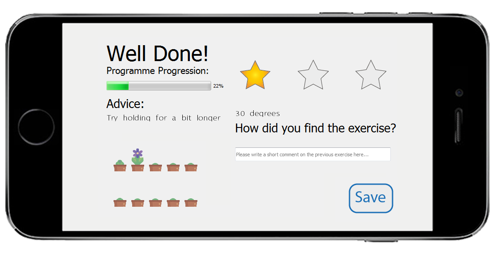
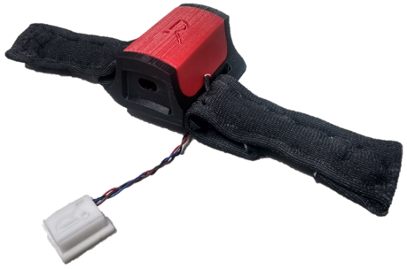

Feeding Robot
Programming BAXTER to feed autonomously.
2018 Group Project with Ina Roll Backe, Tilly Supple, Grace Chin and Lydia Dynes-Martinez

70% of patients do not continue rehabilitation outside of a clinical setting.
Rehapp improves ACL rehabilitation by guiding patients to extend and hold
their knee joint at the correct angle and duration,
in an intuitive and engaging way.
Rehapp was awarded with best human centered rehabilitation device in 2018 by
the Department of Human Robotics, Bioengineering, Imperial College London.
Background
The total cost of care for an ACL reconstruction surgery is estimated to have a
mean of $13,000 (£11,000) per patient. The postoperative care contributes considerably
to this cost.
The cost of rehabilitation is not just monetary. Patients are required to see a physiotherapist
every 2-3 weeks to assess their recovery.
Knowing that the are an estimated 100,000 ACL reconstruction surgeries a year in the US, this has a total
cost of 1.5 million man hours to the US economy.

Medical standard post operative knee hinge brace.
Understanding Pain Points
We interviewed patients recovering from ACL surgery and spoke to
an orthopaedic registrar.
We found vague exercises were prescribed to be performed
at home without doctor supervision.
Experiencing pain and a lack of quantified progress left patients feeling
distressed and unsure about whether they were performing correctly. The result was
often an unnecessary return to the hospital.
Lack of information exchange between patient and doctor resulted in worry, and time
wasted for both the patient and
the clinician.
Solution
Hero image of sorts
UI
The user interface was created using python and integrated with
the hardware to create a fully functioning prototype.
Patients can choose from a selection of different game formats.
The Garden game allows patients to grow their own garden of flowers while performing their
knee flexion and extension exercises. This guides them through the movement, making sure they are
reaching the correct angle, duration and number of repititions.

Patients control a virtual watering can with their leg angle.

Review page lets patients know how well they performed, how
they could improve and sends feedback straight to their doctor.

Track progression over time and share!
Hardware
The hardware consists of Adafruit Feather MO Bluefruit LE micro-controller, two IMUs for measuring
the relative angle of the leg, and two haptic motors to provide vibrational feedback to the user.

 about
about